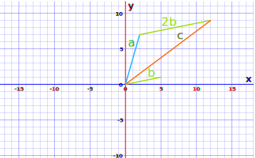
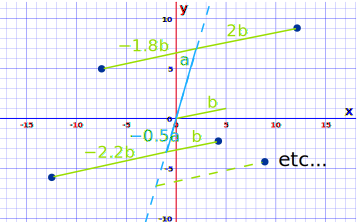
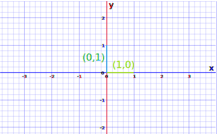
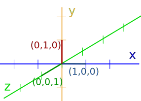

Matrix Rank
The rank is how many of the rows are "unique": not made of other rows. (Same for columns.)
Example: This Matrix
The second row is just 3 times the first row. Just a useless copycat. Doesn't count.
So even though there are 2 rows, the rank is only 1.
What about the columns? The second column is just twice the first column. And the third column is three times the first (or 1.5 times the second) so also doesn't count.
So the columns also show us the rank is only 1.
Example: This Matrix
The second row is not made of the first row, so the rank is at least 2.
But what about the third row? It is the first and second added together, so does not count.
So even though there are 3 rows, the rank is only 2.
What about the columns? The second column is fine, but column 3 is columns 1 and 2 added together.
So the columns also show us the rank is only 2.
Example: This Matrix
The second row is not made of the first row, so the rank is at least 2.
The third row looks ok, but after much examination we find it is the first row minus twice the second row. Sneaky! So the rank is only 2.
And for the columns: In this case column 3 is columns 1 and 2 added together. So the columns also show us the rank is 2.
Example: The Identity Matrix
All rows are strong independent individuals, not relying on others for their existence! So the rank is 3.
And exactly the same for the columns, so they also tell us the rank is 3.
In fact the rows and columns always agree on the rank (amazing but true!).
When we talk about rows here, we can also say the same thing about columns.
So we don't really need to work out both.
Why Find the Rank?
The rank tells us a lot about the matrix.
It is useful in letting us know if we have a chance of solving a system of linear equations: when the rank equals the number of variables we may be able to find a unique solution.
Example: Apples and Bananas
If we know that
- 2 apples and 3 bananas cost $7
- 3 apples and 3 bananas cost $9
Then we can figure out the extra apple must cost $2, and so the bananas costs $1 each.
(There are 2 variables and the rank is also 2.)
But if we only know that
- 2 apples and 3 bananas cost $7
- 4 apples and 6 bananas cost $14
We can't go any further because the second row of data is just twice the first and gives us no new information. (There are 2 variables and the rank is only 1.)
It also has uses in communication, stability of systems and more.
Linear Dependence
Instead of "not made of" we say they are linearly independent which is an important idea.
Linear means we can multiply by a constant, but no powers or other functions. The constant can be any real number (0, 1, any whole number, fraction, negatives, etc.).
Dependence means they depend on each other, in other words we can add some up (after multiplying by a constant) to make another one.
Imagine they are vectors (have direction and length). Can we combine the other vectors (stretched or shrunk as needed) to get the same result?

c = a + 2b,
so c is linearly dependent on a and b
Also notice that:
- a and b are together linearly independent: we can't use a on its own to get to where b is, or vice versa.
- The same is true for b and c, or a and c.
- But a, b and c are together linearly dependent.
Thinking just about a and b: we can actually reach anywhere on the plane using those two vectors:

Vectors a and b span the whole plane.
When vectors are linearly independent and span a whole space we say they are a "basis" of that space.
So a and b are a basis of the 2D plane.
Note: space is a general term covering 1, 2, 3 or higher dimensions, but we often call 2D space a plane.
So a and b are just as useful as the x,y axes. And the same could be said for any 2 linearly independent vectors in the 2D plane.
The most basic pair of linearly independent vectors are (1,0) and (0,1) which form the 2x2 identity matrix:
They essentially make the familiar x,y axes:

And in 3D:

And in 4D:
OK, that is a little hard to illustrate, but the numbers work out just fine up to as many dimensions as you wish!
How to Find the Rank
It is usually best to use software to find the rank, there are algorithms that play around with the rows and columns to compute it. But in some cases we can figure it out ourselves.
For a square matrix the determinant can help: a non-zero determinant tells us that all rows (or columns) are linearly independent, so it is "full rank" and its rank equals the number of rows.
Example: Are these 4d vectors linearly independent?
The determinant is (using the Matrix Calculator):
1(2(3×4-0×0)-2(0×4-0×1)+0(0×0-3×1))-2(0(3×4-0×0)-2(1×4-0×0)+0(1×0-3×0))+3(0(0×4-0×1)-2(1×4-0×0)+0(1×1-0×0))-4(0(0×0-3×1)-2(1×0-3×0)+2(1×1-0×0)) = 8
The determinant is non-zero so they must all be linearly independent.
And so it is full rank, and the rank is 4.
So we know that it is actually a basis for 4D space: using these 4 vectors we can span all of 4D space.
A great example where mathematics can tell us something that we can't easily imagine.
Other Properties
The rank can't be larger than the smallest dimension of the matrix.
Example: for a 2×4 matrix the rank can't be larger than 2
When the rank equals the smallest dimension it is called "full rank", a smaller rank is called "rank deficient".
The rank is at least 1, except for a zero matrix (a matrix made of all zeros) whose rank is 0.